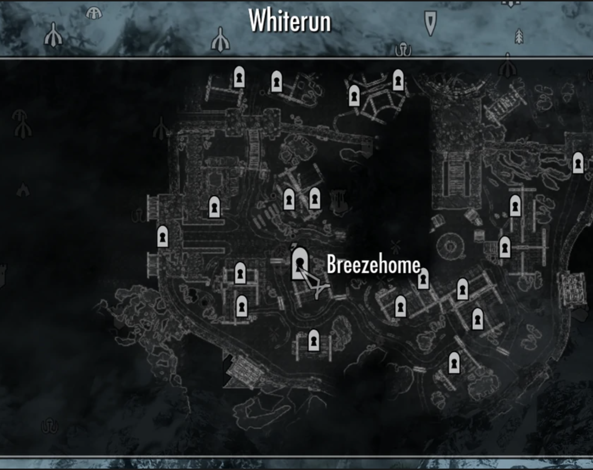
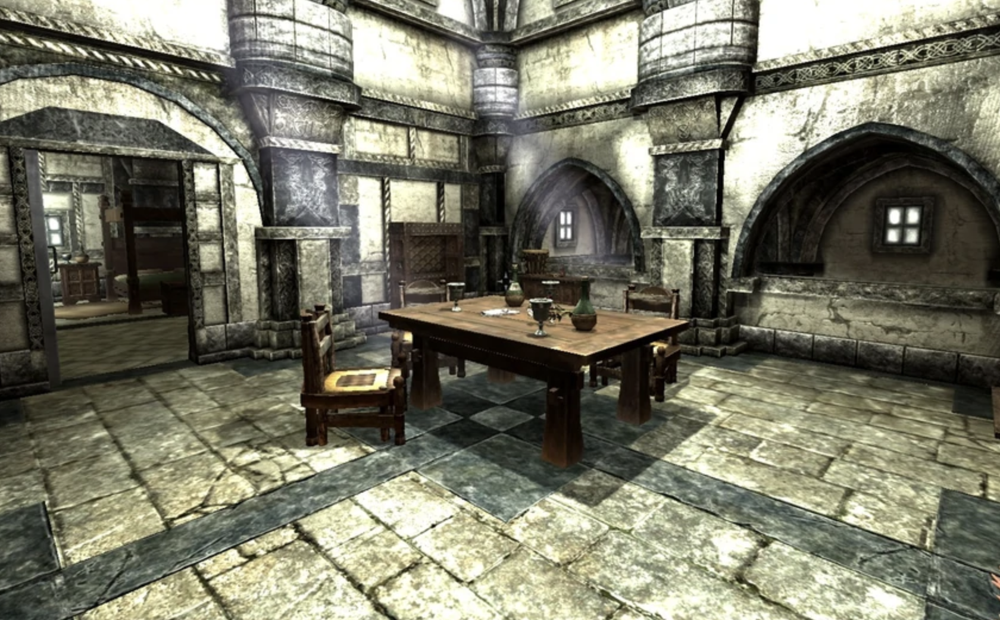

Skyrim For Homesteaders
Looking to stay?
We've got you covered!
Breezehome
- Typically the starter house.
- Base price is 5000 gold.
- Small house with a living room, dining room, kitchen, bedroom, alchemy laboratory, loft, child's bedroom, and housecarl quarters.
- This house is available for purchase to anyone who has completed "Bleak Falls Barrow".

- Located in Whiterun, next to Warmaiden's.
- Whiterun residents follow a 'traditional' nordic way of life that is simple, harsh, and rooted in ancient ideas.
Hjerim
- Base price is 12000 gold.
- Large home with an armory, enchanting laboratory, alchemy laboratory, living room, bedroom, kitchen, children's room, housecarl's quarters, and secret room.
- Hjerim is perfect for any magic users looking to hone their skills.
- Option to clean up the murderous butcher's sacrificial mess in the secret room.
- Available after completing "Blood on the Ice" and "Rescue from Fort Neugrad" for the Stormcloaks or by capturing Windhelm for the imperial legion.
- Located in Windhelm in the northwest region known as the Valunstrad district.
- Windhelm is known as the City of Kings. It is the capital of Eastmarch Hold and the oldest city of Skyrim.
- Windhelm is also a very segregated city with Dunmer residing in the Grey Quarter, Argonians in the docks, and nords in the city. Dark elves beware, racism is here.
Honeyside
- Base price is 8,000 gold.
- Home on the water with a bedroom, kitchen, alchemy laboratory, enchanting area, garden, porch, children's bedroom, and housecarl's quarters.
- Perfect for homesteaders who like the smell of the sea in the morning.
- Must be Thane of Riften to purchase Honeyside.
- Located in northwestern Riften.
- The southernmost and easternmost of all Skyrim's cities.
- Most of the town spills over into the water on tall piers.
- Riften is home to the thieves' guild.
Proudspire Manor

- Base price is 25,000 gold.
- Three story house with a bedroom, living room, alchemy laboratory, enchanting laboratory, kitchen, patio, child's bedroom, and housecarl's chambers.
- Must have completed "The man who cried wolf" and "Elisif's Tribute" to purchase.
- Located next to the Bard's college on the east side of Solitude.
- Solitude is both the capital city of Haarfingar Hold as well as the capital of Skyrim.
- It is a stronghold in and of itself, protected by stone walls and pillars and surrounded by mountains.
Vlindrel Hall
- Base price is 8,000 gold.
- The highest house overlooking the city.
- Built in the Dwemer style, it contains a bedroom, living room, enchanting area, alchemy laboratory, entrence room, children's room, and housecarl's chambers.
- Vlindrel Hall is available to the Thane of the Reach.
- Located in Markarth.
- Markarth is rich from it's silver mines that are worked by prisoners under the watch of the Silverblood family.
- The city is located up in the mountains of The Reach, proving good defense against any attacks.
Land is also available for purchase
You can build it up yourself for the real homestead experience!
Heljarchen Hall
- Purchase for 5,000gold.
- Ability to include a small house or entryway, main hall, and cellar.
- East wing can hold either an armory, kitchen, or library.
- North wing can hold either a trophy room, storage room, or alchemy laboratory.
- West wing can hold either bedrooms, a greenhouse, or an enchanter's tower.
- Complete quests "Waking Nightmare" and "Kill the giant" to purchase.
- Located in The Pale, north of Loreius Farm.
- Land is snowy and is the most open out of all the homesteads.
- A grain mill is available on the property.
Lakeview Manor
- Purchase for 5,000gold.
- Ability to include a small house or entryway, main hall, and cellar.
- East wing can hold either an armory, kitchen, or library.
- North wing can hold either a trophy room, storage room, or alchemy laboratory.
- West wing can hold either bedrooms, a greenhouse, or an enchanter's tower.
- Ability to build a beehive.
- Thane of Falkreath may purchase.
- Located in Falkreath, north of pinewatch.
- Land surrounding consists of dense forest and a large lake.
- Bandits roam Falkreath and a Conjurer's Altar with a hostle mage can be found north of the property.
Windstad Manor
- Purchase for 5,000gold.
- Ability to include a small house or entryway, main hall, and cellar.
- East wing can hold either an armory, kitchen, or library.
- North wing can hold either a trophy room, storage room, or alchemy laboratory.
- West wing can hold either bedrooms, a greenhouse, or an enchanter's tower.
- Complete the quest "Laid to Rest" to purchase.
- Located in Hjaalmarch, south of High Gate Ruins.
- Borders the sea in the snowy northern region of Skyrim.
- A fish hatchery is avaiable on the property.